Philosophy
The name and the mark
The name

Dalang is the master puppeteer of Javanese wayang kulit, shadow puppet theatre. One person sits behind a lit screen for an entire night. They voice every character. They narrate. They cue the gamelan. They improvise freely inside a story everyone already knows the shape of, and they carry all of that alone.
That is the Dungeon Master's job, described several centuries early.
Where the metaphor stops
In wayang, there is an audience. At a D&D table, there isn't. Players aren't spectators, they're co-authors, and the story is something the table makes together. The dalang metaphor is about what the DM has to carry, the sheer amount of world, voices, and rules held in one person's head, not a claim that the DM performs while everyone else watches.
The mark
The app's mark is a crowned naga head, forward-facing, wearing a d20 as its crown.
The naga is Antaboga. In Javanese cosmology he lies in Saptapratala, the layer beneath the world, and the world rests on him. He isn't a monster to be defeated, he's the foundation, and he holds it up out of sight. That's this app's role too: it sits underneath the session holding the structure up, and nobody at the table has to think about it, including the DM.
The crown is a d20. It signals the game system with the smallest possible gesture, and it sits where a mahkota sits in wayang iconography, the mark of rank on a figure of that standing.
Said plainly
Dalang is named for the puppet master of Javanese wayang, the one person who voices every character, keeps the whole night running, and improvises it all from behind the screen. Any DM will recognise the job. The mark is Antaboga, the serpent that holds up the world, wearing a d20.
See also: Background for what follows from this in how the app is actually built, and Legal & Sources for ownership and licensing.